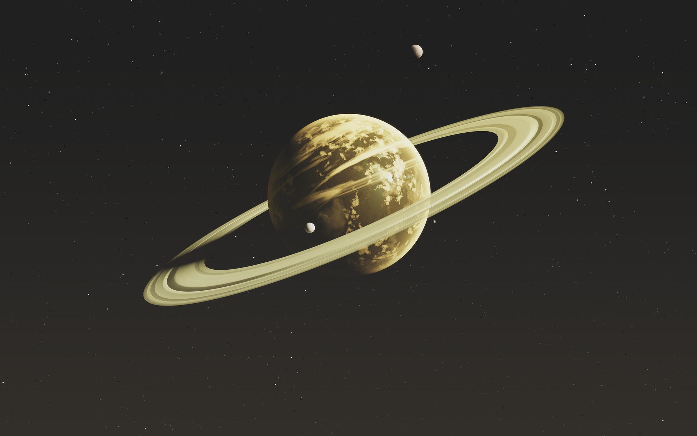

Der Saturn im Überblick
Saturn, benannt nach dem römischen Gott des Ackerbaus, ist der sechste Planet in unserem Sonnensystem. Seine charakteristischen Ringe machen ihn zu einem der auffälligsten Himmelskörper. Erfahren Sie mehr über seine Entstehung, seine beeindruckenden Ringe und die einzigartige Atmosphäre dieses Gasriesen.
Die Ringe von Saturn
Tauchen Sie ein in die faszinierende Welt der Ringe von Saturn. Unser Team hat bahnbrechende Forschung betrieben, um die Zusammensetzung, Entstehung und Dynamik dieser spektakulären Ringstrukturen zu verstehen. Erleben Sie mit uns die Schönheit und Komplexität, die Saturn zu einem einzigartigen Juwel in unserem Sonnensystem machen.
Atmosphäre und Stürme
Erforschen Sie die Atmosphäre von Saturn, die hauptsächlich aus Wasserstoff und Helium besteht. Entdecken Sie die beeindruckenden Sturmaktivitäten und Wolkenformationen, die das Wetter auf diesem Gasriesen prägen, und verstehen Sie, wie sich seine Atmosphäre von anderen Planeten unterscheidet.
Monde und Entdeckungen
Saturn beherbergt eine Vielzahl von Monden, darunter Titan, einer der größten Monde im Sonnensystem. Erfahren Sie mehr über die Entdeckungen und Erkenntnisse, die durch die Erforschung der Monde von Saturn gewonnen wurden, und wie sie zu unserem Verständnis der Planetenbildung beitragen.
Internationale Zusammenarbeit
Space Exploration fördert die internationale Zusammenarbeit in der Raumfahrtforschung. Durch den Austausch von Daten, Ressourcen und Know-how tragen wir dazu bei, globale Herausforderungen anzugehen und gemeinsam Lösungen für eine nachhaltige Zukunft zu finden.
Zukünftige Pläne
Erfahren Sie mehr über unsere spannenden zukünftigen Pläne für die Erforschung von Saturn. Novus Space Exploration bleibt bestrebt, die Rätsel dieses beeindruckenden Gasriesen weiter zu entschlüsseln und neue Horizonte in der Weltraumforschung zu erschließen.